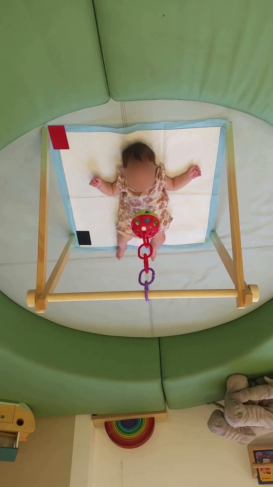
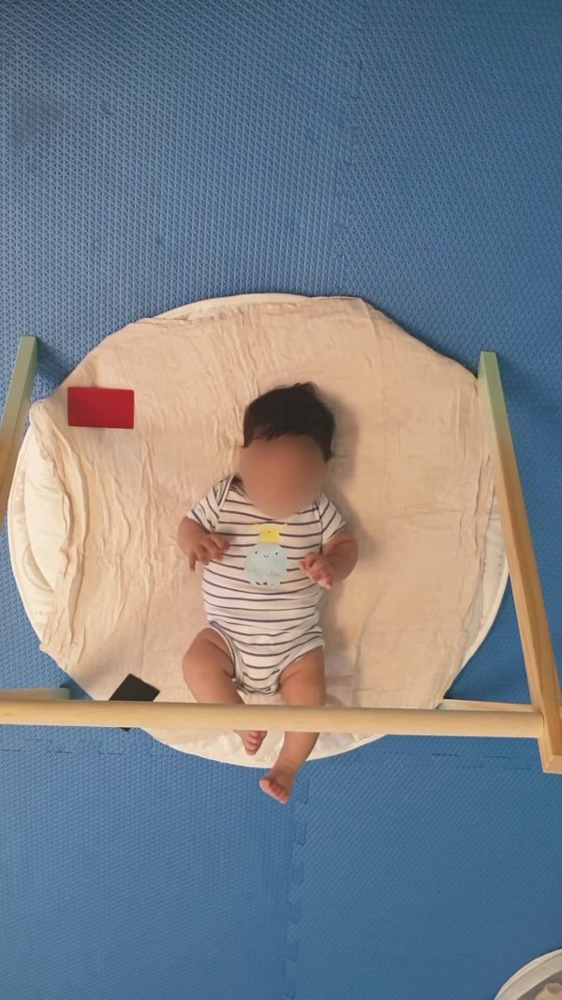
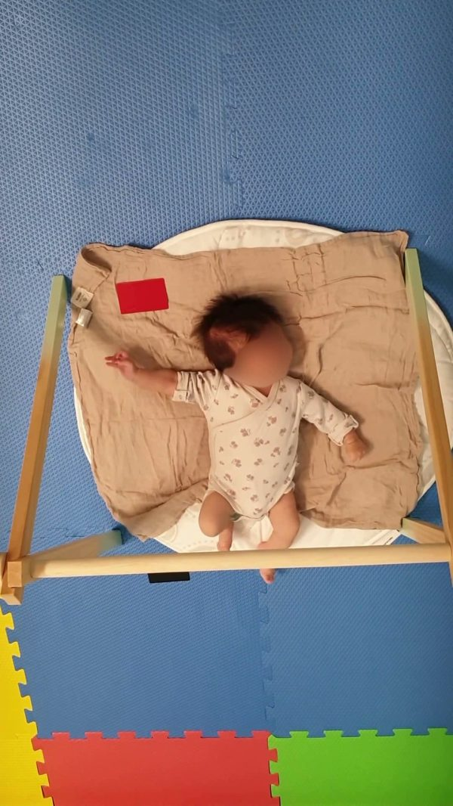
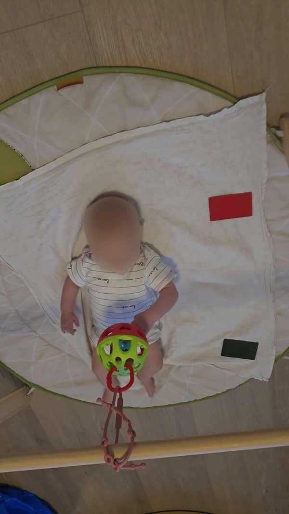
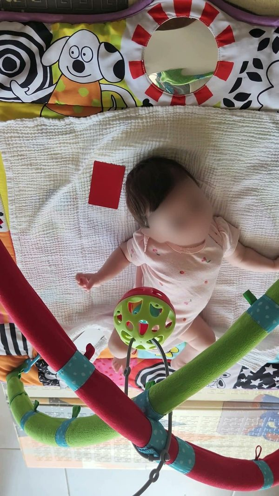
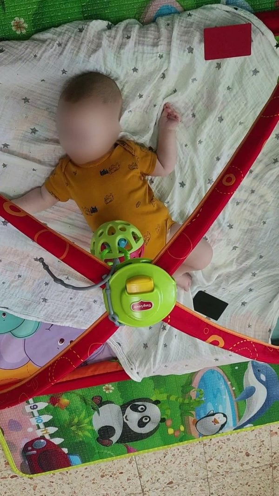
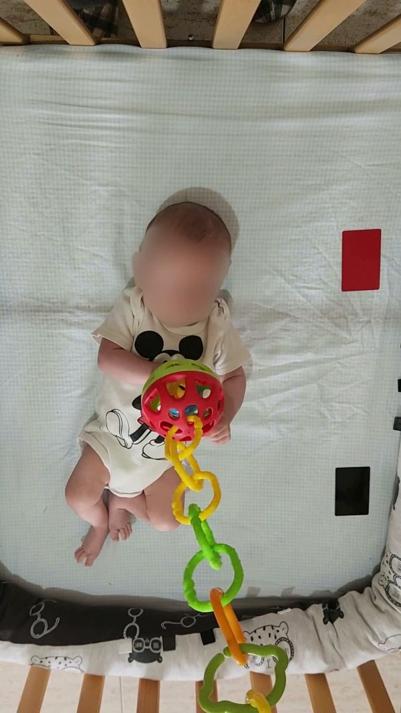
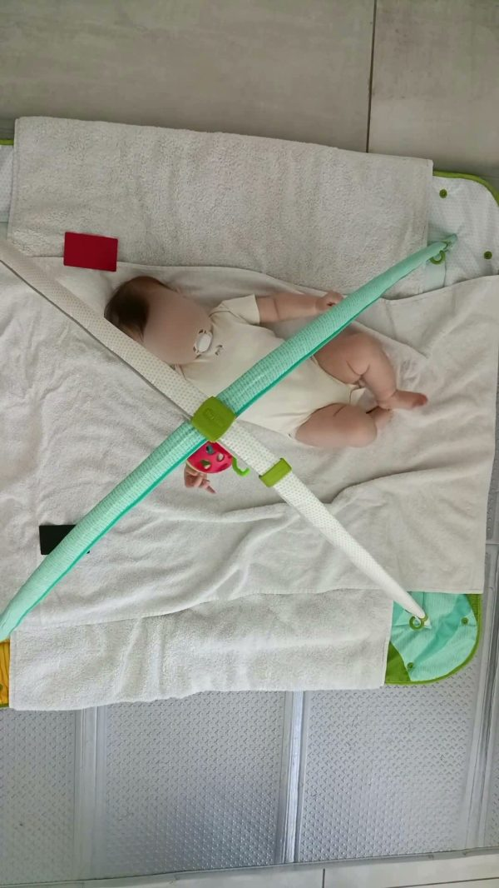
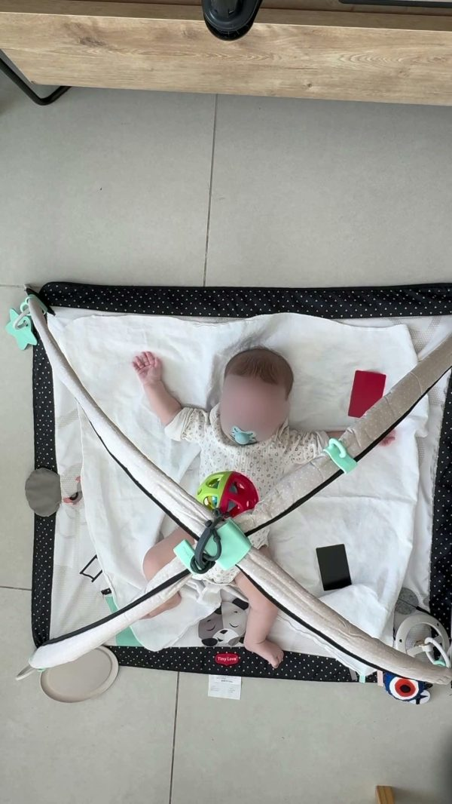

The Development of Directed-reaching Aptitude in Infancy (DADI) dataset is a longitudinal resource capturing the emergence of object-directed action in early infancy. Infants are recorded at 6, 10, 13, and 17 weeks, during both hanging-mobile interaction and spontaneous movement sessions. Using pose estimation and kinematic analysis, DADI enables quantitative investigation of how early motor behavior becomes increasingly organized across development, providing an ecologically grounded framework for studying the emergence of goal-directed action and the foundations of agency.

6 weeks
6 weeks
6 weeks
10 weeks
10 weeks
13 weeks
13 weeks
17 weeks
17 weeksNLF · YOLO · ViTPose · MediaPipe
| Age | Sessions | Recorded | Usable |
|---|---|---|---|
| 6 weeks | 65 | 19 h 40 min | 16 h 52 min |
| 10 weeks | 56 | 16 h 55 min | 15 h 8 min |
| 13 weeks | 56 | 15 h 45 min | 13 h 29 min |
| 17 weeks | 54 | 15 h 45 min | 13 h 10 min |
| All | 231 | 68 h 5 min | 58 h 39 min |
A sample is on Google Drive now. The full dataset will be released in a dataset repository. Leave your email and we will write once when it is out.
We’ll only use your email to notify you about the dataset release.